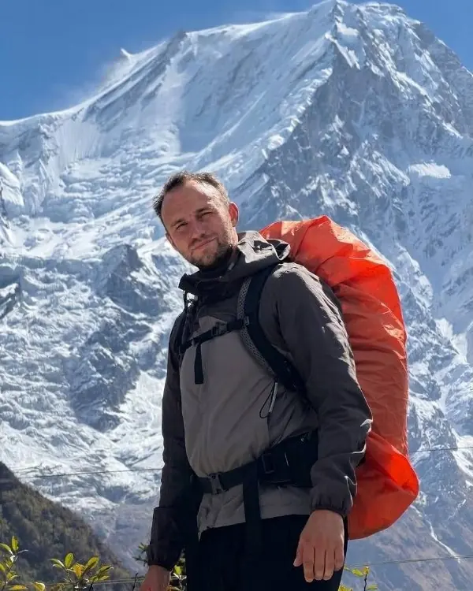
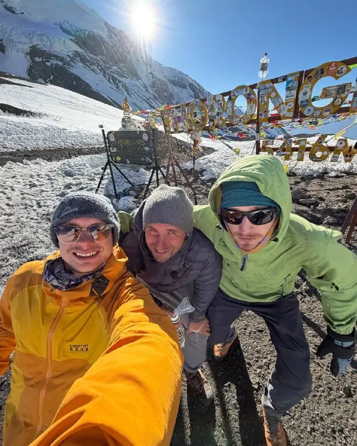

Виза?

Проверяю визы перед каждой своей поездкой. Здесь та же база, что в моём боте.
Иван Шматовпутешествую сам с 2019 года
Проверка визы
Трек вокруг Аннапурны
- 58страниц в бесплатном PDF
- 17дней пешком
- 5 416метров — Торонг-Ла
- ≈22 400 ₽еда и жильё за 16 дней
Маршрут по дням, реальные цены в рупиях и рублях, документы и акклиматизация — по нашему походу осенью 2026 года.
Где был сам
Каждое фото ведёт на пост: как туда добраться и сколько это стоило.
Перед поездкой
Пошаговые разборы из канала: что сделал, сколько заплатил, где споткнулся.
Визы, которые я оформлял сам
- Виза в Япониювизовый центр, справки, программа поездки
- Виза в Великобританиюсколько стоит и где сдавать биометрию
- Виза в Индиюe-Visa на 30 дней, год и 5 лет
- Виза в Австралиюподача, биометрия, сроки
- Виза в Индонезиюпо прилёту и электронная
- Виза во Вьетнамe-visa и безвиз на 45 дней
- Сингапуртранзит 96 часов без визы
- Виза в Непалпо прилёту в Катманду
Деньги, связь, мелочи
- Банковская карта во Вьетнаме в 2026BIDV по загранпаспорту и туристической визе
- Карта в Непале за 13 ₽Khalti: QR, виртуальная карта, пополнение криптой
- Сим-карта для трека вокруг АннапурныNTC против Ncell, 100 ГБ за 700 ₽
- Пермит на Аннапурну3 000 рупий, 5 минут в иммиграционном офисе
- Бизнес-зал бесплатнобез премиальных карт
- Кемпинги в Новой Зеландиигде можно спать бесплатно, а где штраф
Обо мне
Работал в московском аэропорту. 6 марта 2019 года уволился и в тот же день улетел в Китай — с тех пор в дороге.
- 2019Китай и Вьетнам
Учитель английского в Китае, потом Ханой и Дананг.
- 2019Корея с $50 в кармане
41 день работы и 19 дней путешествий — вывез из страны $2 500.
- 2021Автостопом до Магадана
Зимой через всю страну, по Колыме.
- 2024Папуа и Эверест
Задержали военные в Энаротали, позже — одиночный поход к базовому лагерю Эвереста.
- 2025–2622 страны соло
От Гонконга и Австралии до Патагонии, Перу и Парагвая.
- 2026Аннапурна и Манаслу
17 дней пешком, два перевала выше 5 000 м — и гайд по итогам.
